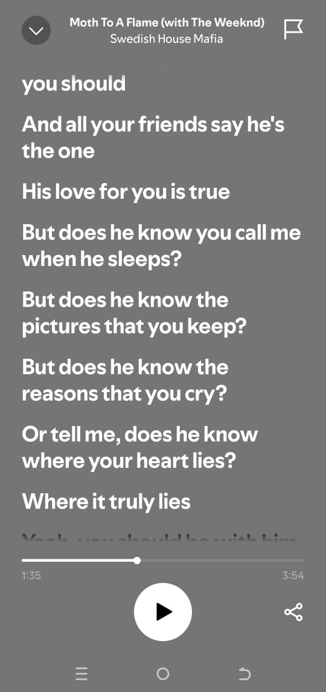

like 80 % of the exam was theory .. ata haimake sense si as long as i know how to code.. who cares about the characteristics of a good website
ANYWAY... Happy birthday Winnie 😂
Damn You're 20 now.. Don't you feel weird dating someone so young 😂 I mean you're more experienced then me when it comes to a lot of stuff
Including dating.. i feel weird about it sometimes. but oh well I'm guessing there's somethingyou see in me that I don't see in myself 😂
I still don't know what to get you for your birthday
For some reason I feel like you won't like a bottle of water.. maybe I'll get you some fruits.. ama I can give you a hug 🙂
We'll just see
Maybe I should just list some of the songs that remind me of you in this page .. apart from Khalid songs and the songs from our playlist
I don't know if you remember this song I told you about kitambo.. back when I was living alone. I'll place a spotify link on the image coz putting the song the other way might complicate things 😂

Come to think of it I'm not as obsessed as I was back then 😂 labda I'm improving...
Then there's this song that's kinda like a post breakup song but It makes me think of you.. sijui mbona 😂

I usually think about send it to you if you ever find someone else.. then I start feeling sad . Im a weird person 😂
Then there's Love in the dark by Adele.. It reminds me of that time we weren't talking.. coz I was listening to it alot back then
she's actually my favorite female artist btw 😂. I feel like we've hurt each other a lot. I just hope I make you feel loved more than i hurt you
But I won't focus on the sad stuff.. It's your birthday 😂
wacha nisimention songs from our playlist 😂 like soundgasm 😏
but there's this song by H.E.R that makes me think of you..Best part I don't know if you remember but it was the first song you told me to go listen to
I was asking you what was the best part about the first time we met.. we were at the Gazibo na you were refusing to tell me for some reason 😂 I'd say I miss those times but you had a boyfriend so no.. I don't miss those times 😂
I hate that you're going to finish going through all this in seconds na it took me days to prepare 😭 😭 It's your fault for being a fast reader btw
Anyway.. I don't know what I'll do for the next page but Click here to proceed.. might be the last page coz I'm running out of ideas 😂